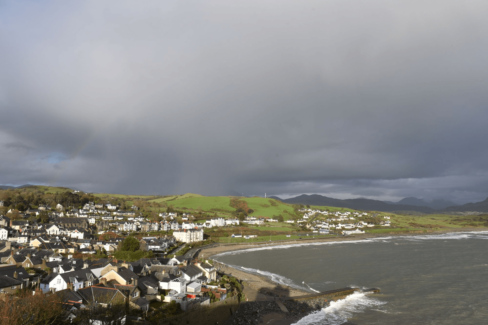
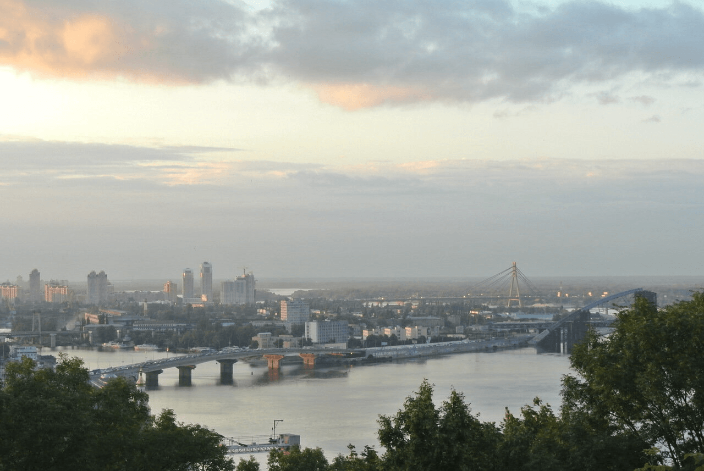
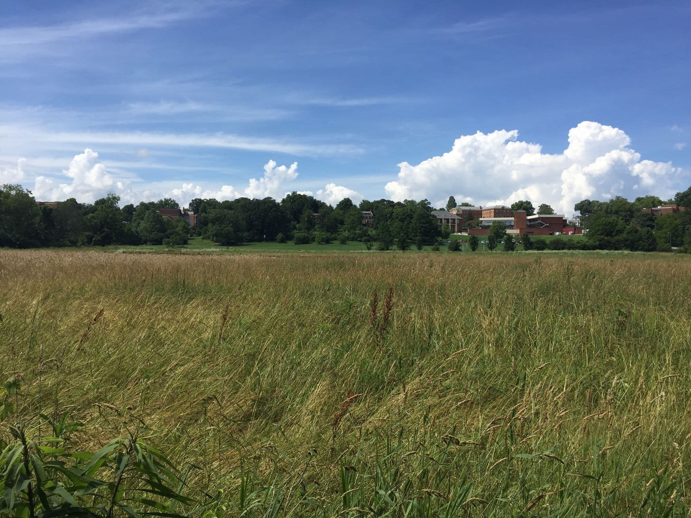
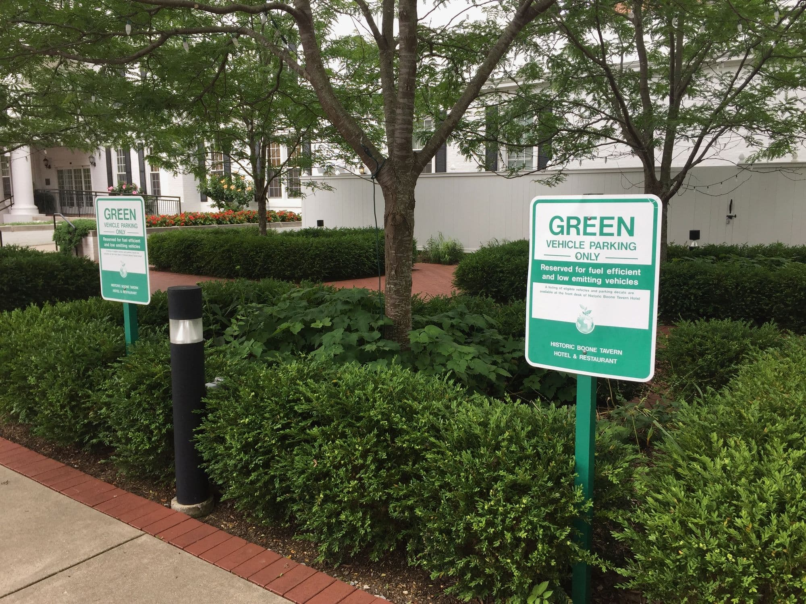

Conoce un poco mejor los lugares de los que proceden tus colegas en línea
Todo ser humano es un artista, un ser de la libertad, llamado a
participar en la transformación y reforma de las condiciones, el
pensamiento y las estructuras que conforman e influyen en nuestras vidas.
— Joseph Beuys
La ciudad de TripleTen ha reunido a profesionales de diferentes
rincones del mundo. Hoy, la Galería de Arte TripleTen se enorgullece
de presentar historias y fotografías de algunas de las personas que
dedican su tiempo y esfuerzo a hacer que los futuros profesionales de
la tecnología de esta ciudad se sientan como en casa. Cada uno de
nosotros tiene una historia sobre el lugar del que procede. Nos alegra
que quieras añadir a nuestra colección tu propia historia y una obra de
arte visual dedicada a tu ciudad natal. No importa de dónde seas, nos
alegra que seas nuestro vecino.








Cricieth, Gales
Compra esta obra como NFT
ARTISTAS
Steffan Warren, editor jefe
Kseniya Glagoleva, gerente de proyectos
Las ruinas medievales del castillo de Cricieth dominan la ciudad desde una roca que se extiende sobre el mar.
Se cree que fue construido por Llywelyn el Grande en el siglo XIII.
800 años después, la autodenominada Perla de Gales en las costas de Snowdonia se ha convertido en un popular destino turístico durante los meses de verano.
A pocos pasos de camino al castillo, puedes disfrutar de los mejores helados del mundo en Cadwalader's,
cuyo ingrediente secreto se rumorea que son algas marinas de la localidad.
Otra cosa por la que es famosa Cricieth es por haber ganado el premio "Gales en flor" durante cinco años seguidos por sus espectaculares muestras florales alrededor de la ciudad.
También vio nacer a David Lloyd George, el único galés que ha sido Primer Ministro del Reino Unido.
Berea, EE.UU.
Compra esta obra como NFT
ARTISTAS
Travis Turner, autor y editor
Berea es una pequeña ciudad ubicada en la parte central de Kentucky. La ciudad está rodeada por hermosos bosques y campos.
Es conocida como la capital de la artesanía del estado, y sus visitantes hallarán infinitas posibilidades para ir de compras:
tiendas de joyas, velas y artículos de madera artesanales; galerías, talleres de vidrio y más.
La ciudad celebra un festival anual que rinde tributo al "spoonbread", un platillo local hecho de pan de maíz y que se sirve
con una cuchara de madera.
Probablemente es mejor conocida por su universidad. El Berea College fue fundado en 1855 y fue la primera universidad sureña
integrada racialmente, así como la primera en ser coeducacional. Algo que la hace única es que no cobra colegiatura:
cada estudiante recibe una beca del 100%.
Muramvya, Burundi
Compra esta obra como NFT
ARTISTAS
Grevisse Kenguruka, editor técnico
Muramvya es una de las 18 provincias de Burundi. Durante la época del reino, fue su capital y en 2017 fue añadida a la lista
provisional de patrimonio mundial de la UNESCO por su paisaje cultural y natural.
Se encuentra ubicada en el centro del país, entre las capitales política y económica. Su clima es frío por la noche,
pero durante el día puede sentirse como un paraíso.
El Parque Nacional de Kibira, una de las mayores reservas de vida silvestre para los simios, ocupa parte de la región.
Está lleno de vegetación y es fuente de ríos que abastecen al país.
El Malecón de Miraflores (Lima)
Compra esta obra como NFT
ARTISTAS
Snayder Cortez, autor
El Malecón de Miraflores es un extenso parque situado sobre los acantilados de la Costa Verde,
ofreciendo una de las vistas más impresionantes del Océano Pacífico.
Es el pulmón verde de Lima y conecta parques emblemáticos como el Parque del Amor.
Es famoso por ser punto de encuentro de deportistas, turistas y parapentistas.
En días despejados, el contraste entre el cielo, el mar y los jardines crea uno de los atardeceres
más hermosos de la ciudad.